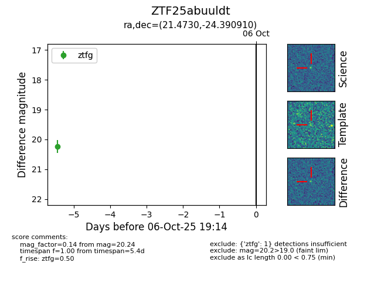

FINK: ZTF25abuuldt
Lasair: ZTF25abuuldt
ALeRCE: ZTF25abuuldt
ZTF25abuuldt (ztf,fink)
equatorial (ra, dec) = (21.4730,-24.39091)
galactic (l, b) = (195.4065,-81.77618)

last ztfg=20.24
1 ztfg detections